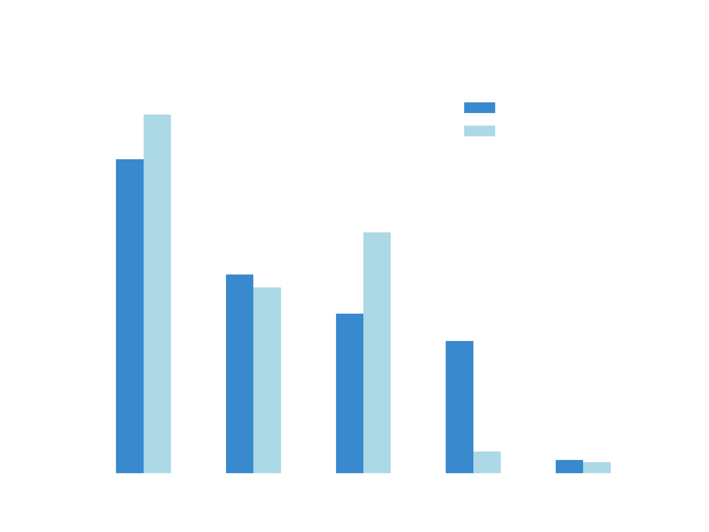

Relatório de Análise de Chutes¶
Hipótese¶
Chutes de Dentro da Área têm maior chance de conversão a gol.
Motivação¶
Intuitivamente, espera-se que chutes de Fora da Área tenham menor chance de conversão a gol devido a vários fatores. Por exemplo, pelo chute vir de fora da área, o goleiro tem um maior tempo de reação para defender o chute. Além disso, há uma maior chance do chute ser bloqueado por um defensor, aumentando as dificuldades para marcar. Outros fatores incluem a menor precisão e força dos chutes provenientes de distâncias maiores.
Metodologia¶
Para testar essa hipótese, utilizamos o arquivo cleaned_events.csv, que contém dados detalhados sobre os eventos em partidas de futebol. A análise seguiu os seguintes passos:
- Preparação dos Dados:
Filtragem de Linhas: Removemos todas as linhas que não correspondem a tentativas de chute (‘event_type’ == 1).
Seleção de Colunas: Mantivemos apenas as colunas necessárias para a análise: ‘shot_outcome’, ‘is_goal’, e ‘location’.
- Simplificação das Localizações: A coluna ‘location’, que originalmente continha 14 diferentes locais, foi traduzida para duas categorias principais:
‘inside’ (dentro da área)
‘outside’ (fora da área)
- Ajuste das Categorias de Resultado de Chute:
- Separação de “No Alvo”: A categoria ‘No Alvo’ foi subdividida em duas:
Gol: Quando ‘shot_outcome’ é ‘No Alvo’ e ‘is_goal’ == 1.
Defendido: Quando ‘shot_outcome’ é ‘No Alvo’ mas ‘is_goal’ == 0.
Manutenção das Outras Categorias: As demais categorias (‘Trave’, ‘Bloqueado’, ‘Trave’) foram mantidas conforme original.
- Cálculo das Estatísticas:
Estatísticas por Gol: Calculamos a porcentagem de gols feitos dentro e fora da área.
Estatísticas por Chute: Calculamos a porcentagem de cada tipo de resultado de chute (Gol, Fora, Defendido, Bloqueado, Trave) tanto para chutes dentro quanto para fora da área.
- Visualização dos Dados:
Gráfico de Barras: Criamos um gráfico de barras duplas para comparar as porcentagens de resultados de chutes dentro e fora da área.
Resultados¶
Estatísticas por Gol¶
Situação |
Porcentagem |
|---|---|
Dentro da área |
88.26 |
Fora da área |
11.74 |
Estatísticas por Chute¶
Resultado |
Porcentagem_in |
Porcentagem_out |
|---|---|---|
Fora |
38.34 |
43.80 |
Defendido |
24.29 |
22.69 |
Bloqueado |
19.51 |
29.45 |
Gol |
16.19 |
2.67 |
Trave |
1.67 |
1.38 |
Gráfico
{kind=link}
Os resultados obtidos reforça a hipótese inicial de que chutes de Fora da Área têm menor chance de conversão a gol. A análise mostrou que 88.26% dos gols foram feitos dentro da área, enquanto apenas 11.74% ocorreram fora da área. Isso reflete que chutes provenientes de distâncias maiores enfrentam maiores desafios para resultar em gol, seja pela melhor posição defensiva do goleiro, maior tempo de reação, ou bloqueios por parte dos defensores.
- Além disso, ao analisar as estatísticas por chute, observamos que:
Fora (Off Target): Constituiu a maior parte dos chutes fora da área, com 43.80% dos chutes resultando em fora, indicando baixa precisão ou força insuficiente.
Defendido: Representou 22.69% dos chutes fora da área e 24.29% dentro, sugerindo que os goleiros conseguem defender efetivamente chutes de ambas as posições.
Bloqueado: Com 29.45% dos chutes fora da área bloqueados e 19.51% dentro, mostra que tem mais chances de um defensor bloquear a bola fora da área.
Gol: Apenas 2.67% dos chutes fora da área resultaram em gol, em comparação com 16.19% dentro, mostrando a dificuldade de converter um gol de fora da área.
Trave: Uma pequena porcentagem de chutes atingiu a trave, com 1.38% fora e 1.67% dentro, mostrando que é um evento raro nos chutes.
Conclusão¶
Portanto, os resultados obtidos reforçam que chutes de Fora da Área têm uma chance menor de se transformar em gol. Nossa análise mostrou que 88.26% dos gols foram marcados dentro da área, enquanto só 11.74% aconteceram fora da área. Isso mostra que chutes de distâncias maiores enfrentam maiores dificuldades para resultar em gol.
Essa análise deixou evidente como os chutes funcionam em diferentes posições no campo. Com um bom processamento e ajuste dos dados, conseguimos garantir que as estatísticas realmente reflitam o que acontece nas partidas.